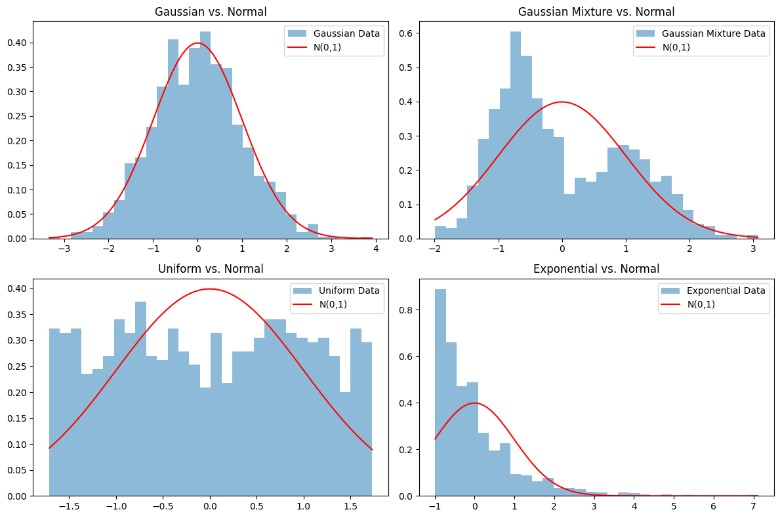

Actual Fit
The actual graph of how the data look like.

Standard fit
The graph confirms the Gaussian dataset aligns with N(0,1) (statistic 0.3475 < critical value 0.7840), while Gaussian Mixture (20.1182), Uniform (12.0752), and Exponential (49.7306) are non-Gaussian. This highlights the need for flexible models like Normalizing Flows for LISA’s complex data distributions.
Gaussian Mixture Model Fit
The graph shows GMM fits with 1 component for Gaussian data (log-likelihood ~2.20) and 2–3 components for Gaussian Mixture (1.90), Uniform (1.10), and Exponential (1.30). GMMs capture Gaussian-like structures but struggle with non-Gaussian data, highlighting limitations for LISA’s complex signals.

GMM vs NF
Gaussian Mixture Models vs NFs 1D data
The graph shows NFs not outperforming GMMs on 1D non-Gaussian data (e.g., Gaussian Mixture - Flow LL (mean ± std): -1.4242 ± 0.0449, GMM LL: -1.2886, Flow Advantage: -0.1356) after optimized training.
NF vs GMM 2D
NFs vs GMMs 2D Data
The graph shows NFs still not outperforming GMMs for 2D non-Gaussian data ( Gaussian Mixture - Flow LL: -2.5813 ± 0.1604, GMM LL: -2.3733, Flow Advantage: -0.2080, GMM Components: 2), with smoother contours.
NF vs GMM 3D
NFs vs GMMs 3D Data
The graph shows NFs still not outperforming GMMs in 3D for non-Gaussian data (Gaussian Mixture - Flow LL: -8.1994 ± 4.7496, GMM LL: -3.3478, Flow Advantage: -4.8516, GMM Components:2 ), with smoother contours.